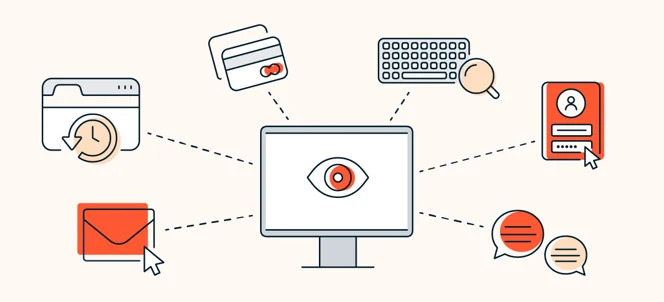

O que é um Malware?
Malware, também chamado de software malicioso, é um software projetado para infectar dispositivos e sistemas para fins maliciosos. Existem muitos tipos diferentes de malware por aí e cada um deles funciona de forma diferente. No entanto, todos os tipos de malware têm o objetivo comum de roubar, modificar e excluir dados.

O que é um vírus?
Um vírus é um tipo de malware que requer interação entre o host e o ser humano para poder infectar um dispositivo. Depois que um vírus infecta um dispositivo com sucesso, ele pode se replicar e se espalhar para outros programas e arquivos no computador infectado.
Afinal, qual é a diferença entre Malware e um vírus?
A diferença entre malware e vírus é que o malware é um termo genérico para qualquer software malicioso, enquanto o vírus é um tipo específico de malware que se auto-replica e se espalha para outros programas e arquivos. Todo vírus é um malware, mas nem todo malware é um vírus.

Tipos de malwares
Clique nos itens abaixo para conhecer as ameaças mais comuns e entender como cada uma delas funciona:
Cavalo de Troia (Trojan)
Cavalo de Troia é um tipo de malware que, frequentemente, está disfarçado de software legítimo. Eles podem ser empregados por criminosos virtuais e hackers para tentar obter acesso aos sistemas dos usuários. Em geral, os usuários são enganados por alguma forma de engenharia social para carregar e executar cavalos de Troia em seus sistemas. Uma vez ativados, os cavalos de Troia permitem que os criminosos o espionem, roubem seus dados confidenciais e obtenham acesso ao seu sistema.
Como os cavalos de Troia funcionam?
Um cavalo de Troia deve ser executado pela vítima para realizar seu trabalho. Ele pode infectar dispositivos de várias maneiras, por exemplo:
- Um usuário vê um pop-up de um programa antivírus falso que afirma que seu computador está infectado e o convida a executar um programa para limpá-lo.
- Um usuário visita um site malicioso e experimenta um download que finge ser um software útil.
- Os hackers criam uma rede de ponto de acesso Wi-Fi falsa que se parece com aquela à qual um usuário está tentando se conectar. Quando o usuário se conecta a essa rede, ele pode ser redirecionado para sites falsos contendo explorações de navegador que redirecionam qualquer arquivo que ele tenta baixar.
Principais tipos de Cavalo de Troia
Backdoor
Com um cavalo de Troia backdoor, usuários maliciosos controlam remotamente o computador infectado. Ele permite que o autor faça o que quiser no computador infectado, como enviar, receber, iniciar e excluir arquivos, exibir dados e reiniciar o computador.
Cavalo de Troia Cryxos
O Cryxos é comumente associado ao que chamamos de scareware ou solicitações falsas de suporte. Normalmente, as vítimas recebem um pop-up contendo uma mensagem como "Seu dispositivo foi hackeado" ou "Seu computador está infectado". O usuário é direcionado a um número de telefone para obter suporte. Se o usuário ligar para o número, ele será pressionado a pagar pelo atendimento. Em alguns casos, o usuário pode ser solicitado a conceder acesso remoto de sua máquina ao "agente de atendimento ao cliente", o que pode levar ao sequestro do dispositivo e ao roubo de dados.
Instant Messenger
Os programas cavalos de Troia Instant Messenger roubam seus logins e senhas de programas de mensagens instantâneas, como WhatsApp, Facebook Messenger, Telegram, etc. Esse tipo de cavalo de Troia pode permitir que o invasor controle as sessões de bate-papo, enviando o cavalo de Troia para qualquer pessoa da sua lista de contatos.
Como os cavalos de Troia podem afetar você.
Os cavalos de Troia se escondem bem: enganam os usuários para que os instalem e depois trabalham nos bastidores. Talvez a vítima nem perceba a infecção até que seja tarde demais.
Fique atento aos seguintes sinais:
- Baixo desempenho do dispositivo: Seu dispositivo está lento ou com travamentos frequentes (incluindo a tela azul do Windows).
- Pop-ups e anúncios intrusivos: não apenas anúncios, mas pop-ups de navegador que oferecem produtos ou verificações de antivírus que, quando clicados, baixam malware em seu dispositivo.
- Alterações inesperadas no sistema: configurações de navegador alteradas sem sua permissão, novos ícones na área de trabalho ou alterações na página inicial do navegador.
- Programas desconhecidos aparecendo: programas que você não instalou aparecem na lista de programas instalados ou em execução do seu gerenciador de tarefas.
Como se prevenir?
Para se proteger contra cavalos de Troia, é importante seguir uma combinação de práticas para garantir sua segurança:
- Tenha cuidado com os downloads. Nunca baixe ou instale software de uma fonte na qual você não confie totalmente.
- Use um antivírus confiável. Mantenha seu antivírus atualizado e execute varreduras regulares.
- Esteja ciente das ameaças de phishing. Não clique em links ou anexos suspeitos em e-mails ou mensagens de texto.
- Atualize o software do seu sistema operacional assim que houver atualizações disponíveis. Além das atualizações do sistema operacional, você também deve verificar se há atualizações em outros softwares usados no dispositivo. As atualizações muitas vezes incluem correções de segurança que ajudam a manter você protegido contra ameaças emergentes.
- Não visite sites não seguros. Procure sites que possuem certificados de segurança – o URL deve começar com "https://" em vez de "http://" – o "s" significa "seguro", e também deve haver um ícone de cadeado na barra de endereço.
- Evite clicar em pop-ups e banners. Não clique em pop-ups desconhecidos e não confiáveis avisando que seu dispositivo está infectado ou oferecendo um programa para corrigi-lo.
Como revomer um cavalo de Troia?
Para remover um cavalo de Troia do seu dispositivo, a melhor maneira é usar um antivírus confiável.
- Remova programas suspeitos: Verifique a lista de aplicativos instalados e desinstale qualquer coisa que você não reconhece ou não se lembra de ter baixado.
- Use software antivírus: Execute uma varredura completa com um antivírus confiável ou ferramenta antimalware especializada para detectar, isolar e remover o malware.
- Verifique itens de inicialização: Desative programas suspeitos que iniciam automaticamente com o sistema via Gerenciador de Tarefas ou configurações do sistema.
- Restaure o sistema: Se o malware persistir, considere usar a restauração do sistema para reverter o dispositivo para um ponto anterior à infecção ou redefina para as configurações de fábrica. Isso garante a remoção completa destes tipos de malware.
Ransomware (Sequestro de Dados)
Ransomware é um software malicioso de extorsão que sequestra seus arquivos ou todo o dispositivo e os mantém como refém até você pagar. Ele não rouba seu computador; ele apenas tranca a porta e cobra pela chave.
Em cibersegurança, a definição de ransomware é simples: malware criado para extorsão. Ele bloqueia o acesso a arquivos ou a um dispositivo, normalmente por meio de criptografia, e exige pagamento. Muitas variantes roubam dados antes, tornando-o uma das ameaças mais graves hoje.
O nome combina “ransom” (resgate) e “software” (programa), descrevendo tanto o modelo de negócio quanto o tipo de programa.
A maioria das infecções começa com e-mails de phishing, downloads maliciosos, senhas vazadas ou software sem atualização.
Como o ransomware funciona?
Ransomware age em etapas. Primeiro o malware obtém acesso a um dispositivo, depois localiza dados importantes, em muitos casos copia‑os para fora, criptografa os arquivos e exibe uma exigência de resgate.
Acesso
- Link de phishing
- Credenciais roubadas
- Falha sem correção
Roubo de dados
Copiar arquivos
Criptografia
Bloquear alvos
Pedido de resgate
Prazo + pagamento
Principais Tipos de Ransomware:
Crypto ransomware
Crypto ransomware criptografa arquivos individuais usando forte criptografia enquanto deixa o dispositivo funcionando. Documentos, planilhas e fotos ficam visíveis, mas se recusam a abrir, frequentemente renomeados com uma extensão desconhecida. O computador funciona apenas o suficiente para mostrar a exigência de resgate.
Locker ransomware
Locker ransomware bloqueia o dispositivo inteiro em vez de arquivos individuais. Uma mensagem em tela cheia substitui a área de trabalho normal, e teclado e mouse respondem apenas o suficiente para inserir dados de pagamento. Os arquivos por baixo costumam ficar intactos, o que pode tornar lockers mais fáceis de recuperar do que crypto ransomware.
Ransomware focado em roubo de dados
Alguns ransomware modernos priorizam roubar informação sensível junto com, ou em vez de, criptografar arquivos. A extorsão vem da ameaça de expor ou vender os dados roubados, o que significa que restaurar arquivos a partir de um backup não resolve o risco de privacidade.
Como se prevenir?
Não há como evitar ransomware totalmente, mas alguns hábitos simples previnem a grande maioria dos ataques.
Faça backup dos seus dados
Backups transformam um desastre em inconveniente. Mantenha cópias dos seus dados em locais seguros e separados do dispositivo principal.
Mantenha seu sistema e softwares atualizados
Atualizações fecham as brechas de segurança que o ransomware explora, então ative atualizações automáticas para sistema operacional, navegador, aplicativos e software de segurança do computador.
Use software de segurança confiável
Software de segurança (antivírus) adiciona uma camada que hábitos não conseguem substituir, observando arquivos maliciosos, comportamento suspeito e a atividade característica de criptografia em andamento.
O que fazer após um ataque de ransomware?
Depois de um ataque de ransomware o objetivo é conter o dano e entender o que está acontecendo antes de tomar decisões sobre reucperação.
Isole o dispositivo infectado!
Desconecte-o da internet e da rede local imediatamente para evitar que o atacante continue acessando seus arquivos ou se espalhe para outros dispositivos. A isolação impede que o malware alcance pastas compartilhadas e outras máquinas na rede.
Devo pagar o resgate?
Pagar geralmente não é recomendado. Não há garantia de que a chave de descriptografia será entregue ou que funcionará; algumas vítimas pagam e não recuperam nada.
Como recuperar meus arquivos?
A possibilidade de recuperação depende se você tem backups limpos ou um descriptografador funcional para a família de ransomware envolvida.
Restaure arquivos a partir de backups
Backups são a rota mais confiável de volta, com uma condição. Restaure somente depois que o ransomware for completamente removido, ou as cópias novas podem ser criptografadas novamente.
Use descriptografadores gratuitos
O projeto No More Ransom, mantido por agências de aplicação da lei e empresas de segurança, oferece ferramentas de identificação e descriptografadores legítimos sem custo.
Dúvidas Frequentes (FAQ)
Ransomware pode infectar smartphones?
Sim, principalmente dispositivos Android. Normalmente chega por apps instalados fora da loja oficial, atualizações falsas ou links maliciosos, e costuma bloquear a tela em vez de criptografar arquivos. iPhones raramente são afetados, embora pop-ups de golpe às vezes imitem ransomware para assustar usuários e obter pagamento.
Ransomware só ataca empresas?
Não. Empresas atraem valores maiores, mas indivíduos são atacados constantemente por phishing, downloads maliciosos e sites infectados. Usuários domésticos podem ser alvos mais fáceis, já que muitos não mantêm backups isolados nem executam software de segurança atualizado em todos os dispositivos.
Ransomware pode se espalhar para outros dispositivos na minha rede?
Sim. Muitas cepas vasculham unidades de rede, pastas compartilhadas e dispositivos conectados depois de infectar uma máquina. Sincronização em nuvem e drives sempre conectados também podem copiar versões criptografadas sobre backups. Desconectar o dispositivo infectado limita a propagação.
Quanto tempo dura um ataque de ransomware?
A própria criptografia pode terminar em minutos ou horas. Mas atacantes que roubam dados primeiro podem passar dias ou semanas dentro da rede, portanto o ataque visível parece repentino apenas porque a preparação passou despercebida.
Spyware
O spyware foi projetado para se infiltrar em um dispositivo e coletar suas informações em segundo plano, permanecendo difícil de detectar. Spyware é uma forma de malware que monitora secretamente a atividade e rouba informações de computadores, telefones e outros dispositivos conectados.

Como o Spyware funciona?
O funcionamento segue geralmente três etapas principais:
Infiltração
- Links de phishing
- Softwares e anexos maliciosos
- Sites fraudulentos
Monitoramento e Captura
- Registra teclas digitadas
- Histórico de navegação
- Credenciais de login e senhas
Exfiltração
Enviados ou vendidos a cibercriminosos para fins de fraude, roubo de identidade ou espionagem.
Que informações o spyware pode roubar?
O spyware pode roubar uma ampla variedade de informações, incluindo:
- Credenciais de conta: nomes de usuário, senhas, PINs, e dados de login salvos que podem ser usados para acessar suas contas online.
- Informações financeiras: números de cartão de pagamento, dados de banco online e outras informações que podem ser usadas para fraude.
- Conteúdo pessoal: mensagens, fotos, vídeos e documentos que podem ser usados para chantagem ou extorsão.
- Dados de atividade e localização: histórico de navegação, buscas, uso de apps, endereços de IP e informações de localização que podem ser usadas para montar perfis detalhados de usuários ou apoiar golpes mais convincentes.
Principais tipos de spyware
Cada forma de spyware é projetada para coletar diferentes tipos de informações ou monitorar diferentes aspectos de um dispositivo.
Adware
Adware é um tipo de software que exibe anúncios indesejados, frequentemente acompanhado de pop-ups, banners e redirecionamentos para sites de terceiros. Embora não seja diretamente malicioso, pode comprometer a privacidade ao coletar dados de navegação e comportamento online.
Keyloggers
Keyloggers registram tudo o que é digitado em um teclado. Isso significa que atacantes podem capturar detalhes importantes como senhas e mensagens conforme são digitadas.
Infostealers
Infostealers são projetados para procurar informações valiosas em dispositivos, como as senhas salvas no navegador, cookies, dados de preenchimento automático e sessões de login. Eles se tornaram uma das formas mais comuns de spyware moderno porque podem rapidamente reunir grandes quantidades de informações sensíveis.
Como prevenir o spyware?
Hábitos seguros online com proteções básicas de segurança podem reduzir significativamente o risco de infecção. A maioria dos spyware depende do usuário baixar algo ou conceder um acesso que não pretendia.
Muitas infecções por spyware começam com um erro simples, como clicar em um link ou instalar software de uma fonte não confiável.
Evite software pirata e aplicativos "crackeados". Estes são os métodos mais comuns de entrega de spyware e outros malwares.
Como remover Spyware?
A maioria das infecções por spyware pode ser removida. O importante é interromper o acesso, escanear o dispositivo, remover softwares suspeitos e proteger as contas que possam ter sido expostas.
Siga estes passos se você suspeitar que um spyware infiltrou seu dispositivo:
- Desconecte contas sensíveis. Saia de contas importantes a partir de outro dispositivo confiável.
- Execute uma verificação de segurança. Use um antivírus confiável para buscar spyware, Trojans, apps maliciosos e alterações suspeitas no sistema.
- Remova apps e extensões suspeitas. Desinstale apps desconhecidos, programas baixados recentemente e extensões de navegador que você não reconhece.
- Altere senhas importantes a partir de um dispositivo limpo. Priorize e-mail, banco, redes sociais, armazenamento em nuvem e quaisquer contas usadas no dispositivo infectado.
- Ative a autenticação de dois fatores (2FA). Isso ajuda a proteger contas mesmo que o spyware capture uma senha antes da remoção.
Se a infecção persistir
Se o dispositivo continuar apresentando sinais de infecção, considere realizar um reset de fábrica (dispositivos móveis) ou uma reinstalação completa do sistema operacional (computadores). Isso remove aplicativos instalados e configurações. Também eliminará a maioria das formas de spyware, mas só deve ser feito após fazer backup de arquivos importantes.
Dúvidas Frequentes (FAQ)
O spyware pode acessar sua câmera e microfone?
Sim, alguns spywares podem acessar a câmera e o microfone de um dispositivo se tiverem as permissões necessárias ou explorarem uma vulnerabilidade de segurança. Spyware mais avançado também pode capturar vídeos ou gravações de áudio sem o conhecimento do usuário.
O spyware pode roubar senhas?
Sim, muitos tipos de spyware são projetados para roubar senhas, credenciais de login e outras informações sensíveis. Keyloggers registram o que os usuários digitam, enquanto infostealers podem extrair senhas salvas e dados de preenchimento automático.
O spyware sobrevive a um reset de fábrica?
Na maioria dos casos, um reset de fábrica remove o spyware ao apagar apps instalados e restaurar o dispositivo ao estado padrão.